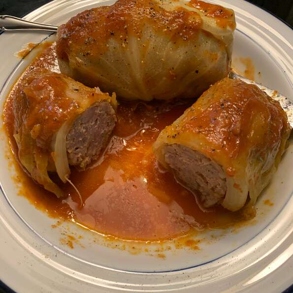

Cabbage

This is a recipe passed down from my great-grandmother, with a few shortcuts she approved of.
Ingredients
- 1 head cabbage
- 1 tablespoon vegetable oil
- 1 onion, chopped
- 2 cloves garlic, crushed
Steps
- Bring a large pot of water to a boil. Cook cabbage in boiling water until outer leaves pull away easily from the head, 3 to 5 minutes. Separate leaves and let cool. Reserve 1 1/2 cup cooking water.
- Heat oil in a large skillet. Add onion and garlic; cook and stir until translucent, about 5 minutes. Stir in wet rice; cook and stir until moisture evaporates, about 1 minute. Remove from heat and let cool, about 5 minutes.
- Mix beef, sausage, and egg together in a large bowl. Stir in cooled rice mixture.